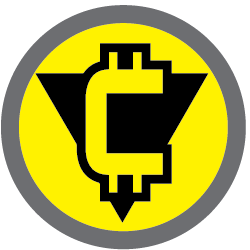

Ciudadan, el Cooperativismo 6.0 y la Citocracia

Ciudadan es la plataforma del Cooperativismo 6.0
Ciudadan es la plataforma del Cooperativismo 6.0
Principios del Cooperativismo 6.0:
- Colaboración a gran Escala, Democracia Autogestiva en las esferas locals: Las herramientas del cooperativismo 6.0 están encaminadas a brindar un marco sólido que favorece a la cooperación diversificada a gran escala, en balance a la autonomía y diversidad creativa de individuos y comunidades colaboradores.
- Conocimiento Libre/Código Abierto: Fomento a la libre circulación así como desarrollo del conocimiento y la tecnología. El conocimiento no se crea individualmente, surge de la colaboración. Software libre y gratuito, acceso universal al conocimiento y las herramientas.
- Producción Local: Todo aquello que pueda ser producido localmente suprime los costos financieros, logísticos y, sobre todo, ambientales asociados con la importación al estilo globalista convencional. Si bien existen suministros con orígenes específicos y casos donde el volumen o requerimientos de producción vuelven inconveniente la producción local, éstos son excepciones que requieren estudios detallados por producto/servicio. Se determina la geodistribución más sostenible y armónica con el entorno, priorizando la producción comunitaria, local, regional, nacional o global según cada caso.
- Sostenibilidad y Ecología: Integración de prácticas y tecnologías que minimicen el impacto ambiental y maximicen la sostenibilidad en todos los procesos.
- Modularidad / Interconectividad / Multifuncionalidad: Diseñar sistemas y productos altamente adaptables, conectados y multifuncionales para maximizar la eficiencia y reducir el desperdicio. Este enfoque se aplica no solo a productos y servicios, sino también a estructuras administrativas, recursos colectivos y software.
- Personalización TecnoArtesanal: Uso de tecnologías avanzadas para permitir altos niveles de personalización y atención al detalle en la producción, reduciendo la generación de residuos. Basado en principios de smart factories de la industria 4.0 y 5.0. Este principio se deriva en estrategias enfocadas a la producción “en capas”, donde hay partes del proceso productivo que son más convenientes realizarse en serie y partes que son personalizables, orientando los diseños a realizarse de este modo, desde un estudio de qué partes de un proceso productivo valen para realizarse en serie y cuáles no, evitando la sobreproducción de miles de artículos que no duran o ni siquiera realizan bien su función y luego son vendidos de todos modos mediante publicidad engañosa para terminar pronto en la basura. Muchos de los productos que usamos día con día serían mucho mejores si no fueran totalmente producidos en serie, sin embargo resultando conveniente y hasta sostenible que algunos de sus componentes sí lo sean. El que sean producidos en serie tampoco significa promover la lógica vigente de producción globalista, el Cooperativismo 6.0 se enfoca en la producción en microfábricas locales, considerando que hay casos excpecionales en que sí se justifican grandes cadenas de producción centralizadas.
- Embalaje y Logística Inteligentes: Diseñar empaques y procesos logísticos que minimicen los desechos y optimicen la distribución, por ejemplo, mediante el uso de envases retornables o dispensadores herméticos en lugar de bolsas aluminazadas; eliminando así embalajes innecesarios en la cadena de suministro.
- Durabilidad: Promover productos duraderos y de alta calidad que reduzcan la obsolescencia y el consumo innecesario de recursos.
- Publicidad Consciente / Consumo Informado: Educación a los usuarios sobre opciones de consumo éticas y sostenibles, proporcionando información detallada y accesible sobre los productos y servicios disponibles, así como sobre su impacto ambiental y social.
- Estandarización Diversificada: Ofrecer diversidad en el catálogo de productos y servicios con altos estándares de calidad y servicio. Implementar herramientas para homologar procesos como la logística de producción, entrega, manejo de residuos y garantías, asegurando consistencia y confiabilidad. Trabajo constante en el balance entre homologación y diversidad que permita la multifuncionalidad de los productos, su interconectividad y modularidad.
- Rescate del Conocimiento de las Plantas: Promover el uso de plantas con beneficios ambientales y médicos, facilitando su integración en prácticas industriales y médicas modernas. Se enfoca en legislaciones favorables y educación sobre los usos beneficiosos de estas plantas.
- Autoempleo Cooperativista: Implementar principios de la industria 4.0, 5.0 y cooperativismo, apoyando modelos de negocio basados en el autoempleo y la colaboración abierta. Utilización de tecnologías como big data, inteligencia artificial, robótica y automatización para facilitar la operación de smart factories y equipos de trabajo dinámicos.
- Propiedades Compartidas: Fomentar la propiedad mixta y colectiva de recursos como aparatos domésticos, vehículos y herramientas. Apoyar modelos de uso compartido y economía circular para promover la sostenibilidad y la equidad en las comunidades.